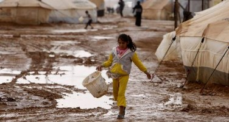
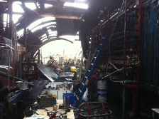

Projecten
Overig
Algemeen Nieuws
Call for the peace weeks!
Don't wait as the number of places is limited!
Zaatari Camp - One Month In

Elin Hofman is an SCI-volunteer from the Netherlands, currently in Amman, Jordan. She fulfills her service as long-term volunteer for Save the Children Jordan. She is currently working with Syrian refugees in Jordan, in Zaatari camp. This is her second report.
VIA at Liberation day festival
Elin in Jordan

Elin, a VIA volunteer who was the coordinator of the Asylum seeker centrum project that VIA did in Almelo during the summer is heading for a new experience. She will participate in a long term volunteering project in Jordan organized by SCI, where she will be volunteering in a refugee camp with Syrian refugees.
Read the blog of Elin (in dutch) www.elinhofman.gaatverweg.nl
Join VIA to support Theaterstraat collective
Join VIA in an action to support Theaterstraat collective, whose building was hit by fire.
Theaterstraat is a small collective of activists, who support demonstrations in technical and logistic means by providing stages, sound, light, transport etc, helping since more than 35 years activists to raise their voices. VIA organized a workcamp (short term volunteering project) in Theaterstraat in the winter of 1995/1996 to help building the roof of the barn. Since then VIA-activists have cooperated with Theaterstraat on many initiatives.
On 3rd of December a big fire broke out in the barn of Theaterstraat in the western harbor area of Amsterdam. VIA is organizing two weekend volunteering actions to help support Theaterstraat organization clean the mess that the fire left and possibly later to build up the building. The work will be held the weekends of 14/15 and 22/23 of December. 12 volunteers will be needed per day. Coordination, food and work gloves will be provided.
More Articles...